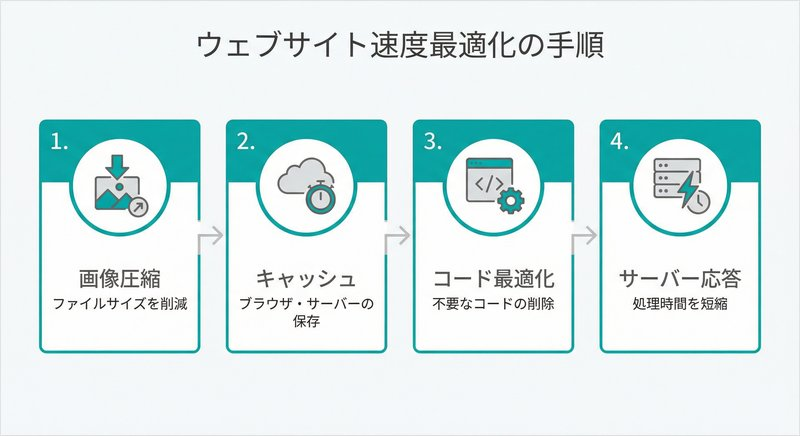

「最近、ホームページからの問い合わせが減った気がする…」そう感じていませんか？実は、その原因はサイトの表示速度かもしれません。
埼玉県戸田市でWeb制作・保守を手がける私たちミアキスにも、「サイトが重くて困っている」というご相談が増えています。特に中小企業のホームページでは、作成から数年経つと画像やプラグインが増え、知らないうちに表示速度が遅くなっているケースが少なくありません。
今回は、なぜ表示速度が重要なのか、そして具体的にどう改善すればいいのかを、専門用語をなるべく使わずにお伝えします。
表示速度が遅いと何が起こるのか？
「たかが数秒の違いでしょ？」と思われるかもしれませんが、実はこの数秒が大きな差を生みます。
ユーザーが離脱してしまう
Googleの調査によると、ページの読み込みに3秒以上かかると、約53%のユーザーがサイトを離れてしまうと言われています。せっかく広告やSNSからアクセスしてくれても、表示される前に「戻る」ボタンを押されてしまうのです。
私自身、スマートフォンで飲食店を探しているとき、なかなか開かないサイトがあると「もういいや」と別のお店を探してしまいます。お客様も同じ気持ちなんですよね。
検索順位が下がる可能性
Googleは2021年から「Core Web Vitals（コアウェブバイタル）」という指標を検索順位の評価基準に加えました。これには表示速度も含まれています。
つまり、表示が遅いサイトは検索結果で上位に表示されにくくなるのです。SEO対策をいくら頑張っても、表示速度が足を引っ張っていたら効果が半減してしまいます。
コンバージョン率（成約率）が下がる
表示速度とコンバージョン率には明確な相関関係があります。1秒の遅延でコンバージョン率が7%低下するというデータもあります。月に10件の問い合わせがあるサイトなら、1秒速くするだけで11件に増える可能性があるということです。
まずは現状をチェック！無料で使える診断ツール
改善の前に、まず自社サイトの現状を把握しましょう。Googleが無料で提供している「PageSpeed Insights」を使えば、誰でも簡単にチェックできます。
URLを入力するだけで、0〜100点のスコアと具体的な改善ポイントが表示されます。モバイルで50点以下、PCで70点以下であれば、早急な改善をおすすめします。
表示速度を改善する5つの方法
それでは、具体的な改善方法をご紹介します。難易度順に並べていますので、できるところから取り組んでみてください。
1. 画像を最適化する（難易度：低）
表示速度が遅い原因の第1位は画像です。スマートフォンで撮影した写真をそのままアップロードすると、1枚で数MBになることもあります。
具体的な対策：
- 画像サイズを適切に縮小する（幅1200px程度で十分）
- JPEG・PNG形式をWebP形式に変換する
- TinyPNGなどの圧縮ツールを使用する
- 遅延読み込み（Lazy Load）を導入する
これだけで、サイト全体の容量が半分以下になることも珍しくありません。
2. ブラウザキャッシュを活用する（難易度：中）
キャッシュとは、一度読み込んだデータを一時的に保存しておく仕組みです。2回目以降のアクセスでは保存されたデータを使うため、表示が速くなります。
WordPressを使っているなら、「WP Super Cache」や「W3 Total Cache」といった無料プラグインで簡単に設定できます。ただし、設定を間違えるとサイトが正しく表示されなくなることもあるので、慎重に行いましょう。
3. 不要なプラグイン・スクリプトを削除する（難易度：中）
「便利そうだから」と入れたプラグインが、知らないうちに表示速度を遅くしていることがあります。
見直しのポイント：
- 使っていないプラグインは削除する
- 似た機能のプラグインが複数ないか確認する
- ソーシャルボタンは必要なSNSだけに絞る
- アクセス解析ツールを複数入れていないか確認する
4. サーバーを見直す（難易度：高）
どれだけサイト側を最適化しても、サーバーの性能が低ければ限界があります。特に格安レンタルサーバーを使っている場合、アクセスが増えると表示が遅くなることがあります。
埼玉県内の中小企業様からも「月額数百円のサーバーを使っているけど大丈夫？」というご相談をいただきます。ビジネス用途であれば、月額1,000〜3,000円程度のプランへの移行を検討されることをおすすめします。
5. コードを最適化する（難易度：高）
HTML・CSS・JavaScriptのコードを最適化することで、読み込み時間を短縮できます。
主な手法：
- ファイルの圧縮（Minify）
- 不要なコードの削除
- CSSの読み込み順序の最適化
- JavaScriptの非同期読み込み
これらは専門知識が必要な作業です。自信がない場合は、専門家に依頼することをおすすめします。
戸田市の企業様からいただいたご相談事例
先日、戸田市内の製造業のお客様から「最近サイトが重くなった」というご相談をいただきました。調査してみると、以下の問題が見つかりました。
- 製品写真が未圧縮のまま掲載されていた（1枚3MB以上）
- 使っていないプラグインが12個も有効化されていた
- 4年前に設定したまま、一度も見直していなかった
画像の最適化とプラグインの整理を行った結果、PageSpeed Insightsのスコアが32点から78点に改善。お客様からは「スマホでもサクサク見られるようになった」とお喜びの声をいただきました。
自分でやるか、専門家に頼むか
表示速度の改善は、ある程度まで自分でできます。特に画像の最適化や不要なプラグインの削除は、今日からでも始められます。
ただし、以下のような場合は専門家への依頼をおすすめします。
- 何から手をつけていいかわからない
- 改善しようとしたらサイトが表示されなくなった
- 技術的な作業に時間を割く余裕がない
- 一度しっかり診断してほしい
私たちミアキスでは、サイト診断から改善作業まで一貫してサポートしています。「うちのサイト、大丈夫かな？」と少しでも気になったら、お気軽にご相談ください。
まとめ：表示速度は「ユーザーへのおもてなし」
表示速度の改善は、単なる技術的な作業ではありません。「お客様を待たせない」という、おもてなしの姿勢そのものです。
実店舗で来店したお客様を何分も放置することはありませんよね。ホームページも同じです。訪問してくれた方をすぐにお迎えできるよう、サイトの「お手入れ」を心がけましょう。
表示速度の改善は、やればやるほど効果が見えやすい施策です。まずはPageSpeed Insightsで現状をチェックするところから始めてみてください。